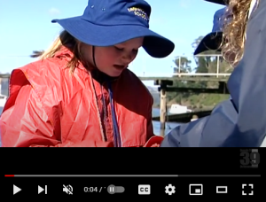

Lakes Entrance Dredging Impact
Dredging Effect Study using Sediment Traps
Longford Primary School
We measured the effects of dredging, using a sediment trap, on chiton at sites. Sites that had low sediment build-up tended to have higher species diversity, rocky shores were dominated by animals that did not like sediment.
